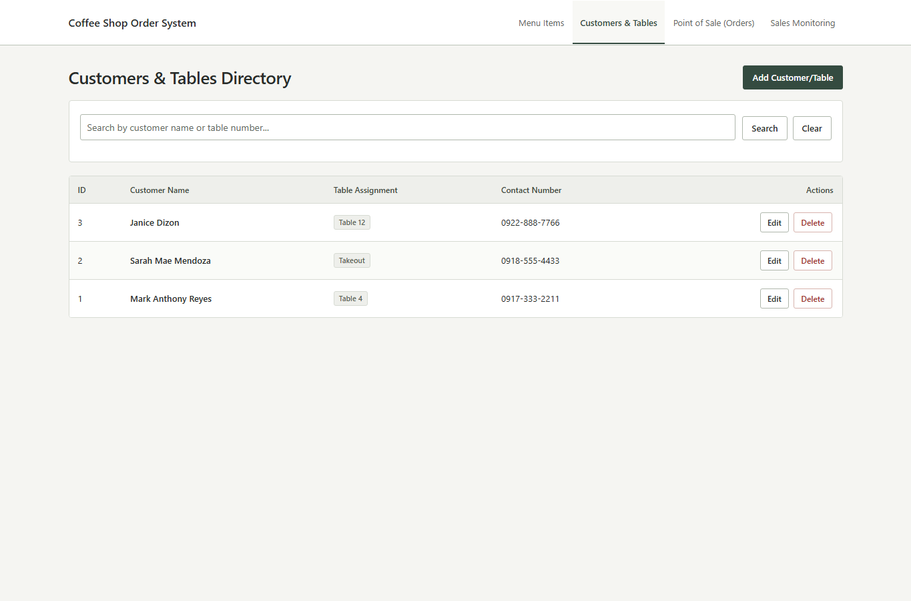

A useful starting point
Local systems.
All in one place.
A collection of PHP & MySQL projects for keeping records, handling transactions, and viewing reports. Pick a system and make it your own.
ZIP · 1.56 MB · PHP, SQL & local assets included

A familiar layout. Your records, your workflow.
The collection
Find your starting point.
Expand a system to see what is included.
Showing all 44 projects
PHP · MySQL · Offline assets01Car RentalVehicles · Customers · Rentals
Folder: CarRentalSystem/
21 files, including PHP pages and local UI assets. Tables: Vehicles, Customers, Rentals.
Included in the complete collection ZIP.
02Hotel ReservationGuests · Rooms · Reservations
Folder: HotelReservationSystem/
24 files, including PHP pages and local UI assets. Tables: Guests, Rooms, Reservations.
Included in the complete collection ZIP.
03Movie BookingMovies · Customers · Bookings
Folder: MovieBookingSystem/
20 files, including PHP pages and local UI assets. Tables: Movies, Customers, Bookings.
Included in the complete collection ZIP.
04Equipment BorrowingBorrowers · Equipment · Borrowing
Folder: EquipmentBorrowingSystem/
13 files, including PHP pages and local UI assets. Tables: Borrowers, Equipment, Borrowing.
Included in the complete collection ZIP.
05Clinic ConsultationDoctors · Patients · Consultations
Folder: ClinicConsultationSystem/
23 files, including PHP pages and local UI assets. Tables: Doctors, Patients, Consultations.
Included in the complete collection ZIP.
06Dental ClinicDentists · Patients · Appointments
Folder: DentalClinicSystem/
13 files, including PHP pages and local UI assets. Tables: Dentists, Patients, Appointments.
Included in the complete collection ZIP.
07VeterinaryVeterinarians · Pets · Treatments
Folder: VeterinarySystem/
20 files, including PHP pages and local UI assets. Tables: Veterinarians, Pets, Treatments.
Included in the complete collection ZIP.
08Pet GroomingPetowners · Pets · Grooming Services · Reservations
Folder: PetGroomingSystem/
14 files, including PHP pages and local UI assets. Tables: Petowners, Pets, Grooming Services, Reservations.
Included in the complete collection ZIP.
09AppointmentClients · Services · Appointments
Folder: AppointmentSystem/
21 files, including PHP pages and local UI assets. Tables: Clients, Services, Appointments.
Included in the complete collection ZIP.
10Restaurant OrderingMenu · Customers · Orders
Folder: RestaurantOrderingSystem/
19 files, including PHP pages and local UI assets. Tables: Menu, Customers, Orders.
Included in the complete collection ZIP.
11Coffee ShopMenu Items · Customers · Orders
Folder: CoffeeShopSystem/
20 files, including PHP pages and local UI assets. Tables: Menu Items, Customers, Orders.
Included in the complete collection ZIP.
12PharmacyMedicines · Customers · Purchase
Folder: PharmacySystem/
11 files, including PHP pages and local UI assets. Tables: Medicines, Customers, Purchase.
Included in the complete collection ZIP.
13Sales OrderProducts · Customers · Orders
Folder: SalesOrderSystem/
12 files, including PHP pages and local UI assets. Tables: Products, Customers, Orders.
Included in the complete collection ZIP.
14BookBooks
Folder: BookSystem/
9 files, including PHP pages and local UI assets. Tables: Books.
Included in the complete collection ZIP.
15InventorySuppliers · Products · Inventory
Folder: InventorySystem/
12 files, including PHP pages and local UI assets. Tables: Suppliers, Products, Inventory.
Included in the complete collection ZIP.
16LaundryServices · Customers · Laundry Orders
Folder: LaundrySystem/
20 files, including PHP pages and local UI assets. Tables: Services, Customers, Laundry Orders.
Included in the complete collection ZIP.
17Repair ServiceCustomers · Technicians · Devices · Repair Transactions
Folder: RepairServiceSystem/
14 files, including PHP pages and local UI assets. Tables: Customers, Technicians, Devices, Repair Transactions.
Included in the complete collection ZIP.
18Gym MembershipMembers · Packages · Memberships
Folder: GymMembershipSystem/
23 files, including PHP pages and local UI assets. Tables: Members, Packages, Memberships.
Included in the complete collection ZIP.
19Event RegistrationEvents · Participants · Registration
Folder: EventRegistrationSystem/
27 files, including PHP pages and local UI assets. Tables: Events, Participants, Registration.
Included in the complete collection ZIP.
20ICT CongressRegistration
Folder: IctCongress/
13 files, including PHP pages and local UI assets. Tables: Registration.
Included in the complete collection ZIP.
21Student EnrollmentStudents · Subjects · Enrollment
Folder: StudentEnrollmentSystem/
24 files, including PHP pages and local UI assets. Tables: Students, Subjects, Enrollment.
Included in the complete collection ZIP.
22Student ScholarshipStudents · Scholarships · Applications
Folder: StudentScholarshipSystem/
23 files, including PHP pages and local UI assets. Tables: Students, Scholarships, Applications.
Included in the complete collection ZIP.
23Student RecordsStudents · Teacher
Folder: StudentRecordsSystem/
10 files, including PHP pages and local UI assets. Tables: Students, Teacher.
Included in the complete collection ZIP.
24Library ManagementBooks · Borrowers · Borrow
Folder: LibraryManagementSystem/
25 files, including PHP pages and local UI assets. Tables: Books, Borrowers, Borrow.
Included in the complete collection ZIP.
25PayrollPositions · Employees · Payroll
Folder: PayrollSystem/
23 files, including PHP pages and local UI assets. Tables: Positions, Employees, Payroll.
Included in the complete collection ZIP.
26User RoleRoles · Users · Assignments
Folder: UserRoleSystem/
22 files, including PHP pages and local UI assets. Tables: Roles, Users, Assignments.
Included in the complete collection ZIP.
27UC IntramuralsRegistration · Department · Tournament Manager · Event · Coach · Dean · Athletes Profile
Folder: UcIntramuralsSystem/
11 files, including PHP pages and local UI assets. Tables: Registration, Department, Tournament Manager, Event, Coach, Dean, Athletes Profile.
Included in the complete collection ZIP.
28Barangay ClearanceResidents · Clearance Types · Clearances
Folder: BarangayClearanceSystem/
21 files, including PHP pages and local UI assets. Tables: Residents, Clearance Types, Clearances.
Included in the complete collection ZIP.
29Water BillingConsumers · Rate Plans · Water Bills
Folder: WaterBillingSystem/
21 files, including PHP pages and local UI assets. Tables: Consumers, Rate Plans, Water Bills.
Included in the complete collection ZIP.
30Electric BillingAccounts · Tariff Classes · Electric Bills
Folder: ElectricBillingSystem/
21 files, including PHP pages and local UI assets. Tables: Accounts, Tariff Classes, Electric Bills.
Included in the complete collection ZIP.
31Hospital AdmissionPatients · Wards · Admissions
Folder: HospitalAdmissionSystem/
21 files, including PHP pages and local UI assets. Tables: Patients, Wards, Admissions.
Included in the complete collection ZIP.
32Tuition PaymentStudents · Fee Categories · Tuition Payments
Folder: TuitionPaymentSystem/
21 files, including PHP pages and local UI assets. Tables: Students, Fee Categories, Tuition Payments.
Included in the complete collection ZIP.
33Apartment RentalTenants · Units · Leases
Folder: ApartmentRentalSystem/
21 files, including PHP pages and local UI assets. Tables: Tenants, Units, Leases.
Included in the complete collection ZIP.
34Car WashCustomers · Wash Packages · Wash Orders
Folder: CarWashSystem/
21 files, including PHP pages and local UI assets. Tables: Customers, Wash Packages, Wash Orders.
Included in the complete collection ZIP.
35Courier DeliveryClients · Delivery Routes · Shipments
Folder: CourierDeliverySystem/
21 files, including PHP pages and local UI assets. Tables: Clients, Delivery Routes, Shipments.
Included in the complete collection ZIP.
36ParkingVehicles · Parking Slots · Parking Tickets
Folder: ParkingSystem/
21 files, including PHP pages and local UI assets. Tables: Vehicles, Parking Slots, Parking Tickets.
Included in the complete collection ZIP.
37Blood BankDonors · Blood Types · Blood Donations
Folder: BloodBankSystem/
21 files, including PHP pages and local UI assets. Tables: Donors, Blood Types, Blood Donations.
Included in the complete collection ZIP.
38Job ApplicationJob Openings · Applicants · Job Applications
Folder: JobApplicationSystem/
21 files, including PHP pages and local UI assets. Tables: Job Openings, Applicants, Job Applications.
Included in the complete collection ZIP.
39Tricycle FranchiseOperators · Vehicles · Franchise Permits
Folder: TricycleFranchiseSystem/
21 files, including PHP pages and local UI assets. Tables: Operators, Vehicles, Franchise Permits.
Included in the complete collection ZIP.
40Alumni TracerDegree Programs · Alumni · Employment Records
Folder: AlumniTracerSystem/
21 files, including PHP pages and local UI assets. Tables: Degree Programs, Alumni, Employment Records.
Included in the complete collection ZIP.
41Universal TemplateItems · Clients · Transactions
Folder: UniversalTemplate/
22 files, including PHP pages and local UI assets. Tables: Items, Clients, Transactions.
Included in the complete collection ZIP.
42System BuilderTables · Fields · Links · Monitoring
Folder: SystemMorpher/
40 files, including PHP pages and local UI assets. Configurable PHP project generator with 18 starting templates.
Included in the complete collection ZIP.
43Basic RecordsRecords · Students · More Items
Folder: BasicCrudSystem/
14 files, including PHP pages and local UI assets. Tables: Records, Students, More Items.
Included in the complete collection ZIP.
44Record ManagerRecords
Folder: CompleteCrudSystem/
16 files, including PHP pages and local UI assets. Tables: Records.
Included in the complete collection ZIP.
No systems found.
Try another name, module, or category.
Every project listed here is included in the full download.
Getting started
Download. Set up. Open.
You will need XAMPP on your computer.
Extract the collection
Download the ZIP and extract the
Desksetfolder somewhere easy to find.Start Apache and MySQL
Open the XAMPP Control Panel and start both services. Keep the default
C:\xampp\htdocsweb folder, or set your own.Choose your system
Run
deploy_exam.batfrom the extracted folder. Choose a system and a new folder name, then open the local address shown.
Can I copy a system manually?
Yes. Copy the whole system folder, including its assets, into C:\xampp\htdocs. Open http://localhost/YourFolder/. Its connector sets up an empty database on the first visit.
Renaming a folder does not rename its database. Use a different database name when you need separate data. Check each project's included guide for its fields and behavior.
What does the system builder do?
Choose option 42 in the launcher to open SystemMorpher. Select a template and configure its tables, columns and links. It generates a new PHP project with forms, lists, search and monitoring.
Calculated amounts, stock rules and other business behavior need their own PHP logic. Linked master-record deletion can also delete dependent records.
One complete download
Keep the whole collection.
All 44 systems and tools, their SQL files, local UI assets, and the Windows launcher.
1.56 MB ZIP · Ready to extract · No account required